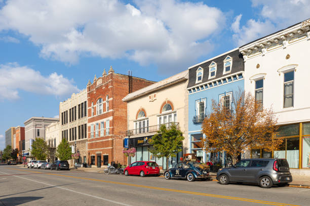

About Kokomo, IN

Foundation & History of Kokomo
The city of Kokomo was founded in 1844, and was named after a Miami chieftan (Ma-Ko-Ko-Mo). The city is best known for being home to the first "horseless carriage" manufactured by Elwood Haynes and Edgar Apperson.
Kokomo's Population
The population of Kokomo was estimated to be around 59,890 in 2023 according to the U.S. Census Bureau.
Geographical Region
Kokomo is a suburban city located in the East Central region of Indiana. It is located about 60 miles north of Indianapolis.
Average Income in Kokomo
The median per capita income in Kokomo in 2023 was estimated to be around $30,738 according to the U.S. Census Bureau, significantly less than the state average.